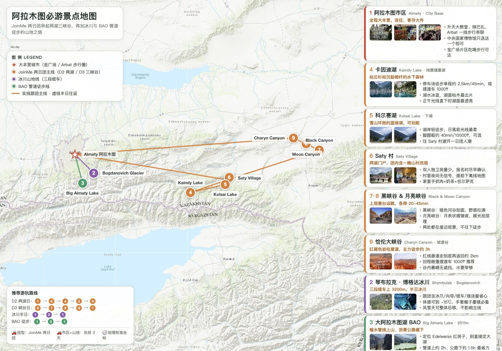
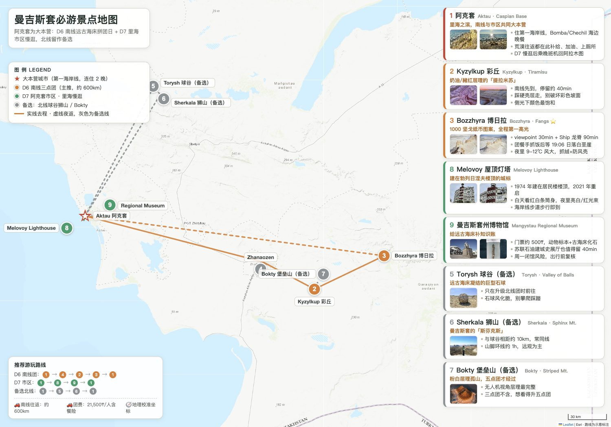

| 晚次 | 地点 | 推荐 | 要点 |
|---|---|---|---|
| D1、D3、D4、D7 共 4 晚 | 阿拉木图·金广场/Arbat | 中端 Renion City / Kazzhol / Holiday Inn（550-900/晚）；升级 Ritz-Carlton；经济 Interhouse | 同一家连住、寄存大件，两湖与阿克套只带分包；步行覆盖市区、去机场 25 分钟 |
| D2 共 1 晚 | Saty 村 | 两湖团含哈萨克家庭民宿 | 公共卫浴，带头灯/拖鞋/洗漱；含家宴早晚餐 |
| D5-D6 共 2 晚 | 阿克套·第一海岸线 | Caspian Riviera Grand Palace（500-800，海景 4.6 分）；Holiday Inn / Renaissance by Sulo；经济 Tarlan | 不选城外 20km 的 Rixos 度假村，赶团绕路 |
| 项目 | 区间 | 说明 |
|---|---|---|
| 国际往返 | 5500-6000 | 去程 MU6041 + 回程按各自目的地 |
| 内陆两段（含行李） | 1700-2400 | KC859 + DV729，越早越便宜 |
| 两湖 2 日小团 | 700-1100 | 拼团；私团 SUV 约 2500-3200 |
| 曼吉斯套（北半+南整） | 2600-3600 | 标准 3 日团 $480≈3432 可比价 |
| 冰川团+BAO 包车 | 510-830 | 冰川含冰爪缆车 |
| 住宿 7 晚（两人分摊后） | 1400-2500 | 阿拉木图 4 晚+阿克套 2 晚+Saty 含团 |
| 餐饮+杂费 | 1700-2800 | 含市内交通、缆车、eSIM、保险 |
| 合计/人 | 约 1.4w-2.0w | 拼团偏下限、全程私团偏上限 |
| 线路 | 长度/耗时 | 难度/爬升 | 怎么去 | 本次安排 |
| BAO 管道徒步上大阿拉木图湖 | 往返 8-11km / 5-7h（含湖边停留） | 中等，累计约 1000m，最高 2511m | 打车定位 Edelweiss 红房子，进山费 1000₸/人 | D4（10/5）午后场 |
| Bogdanovich 冰川+冰洞 | 团线 6-8h，冰面徒步约 4km | 中等，冰爪+向导，10 月有积雪 | Shymbulak 缆车上 3200m，跟团 | D5（10/6）午间场 |
| Kok Zhailau 高山草甸（备选） | 环线 11km / 3-4h | 轻松-中等，缓坡草甸 | 市区后山公交可达 | D8 想加野趣时替换 |
| 天/日期 | 场景 | 随身镜头 | 拍摄重点 |
| D1 · 10/02 | 晚落地、市区晚餐 | 20-70 | 夜景街拍、晚餐 |
| D2 · 10/03 | 两湖 D1 · 恰伦+科尔赛（住 Saty） | 20-70 为主，70-200 放车上 | 20 端拍峡谷廊道，长焦抽岩壁/湖岸局部 |
| D3 · 10/04 | 两湖 D2 · 卡因迪返程 | 20-70 + 70-200（车上） | 长焦拉湖对岸枯木桅杆，广角收越野与湖面 |
| D4 · 10/05 | 上午休整 + 下午 BAO 管道徒步 | 只带 20-70 | 20 端收大湖、35-50 拍人在景中 |
| D5 · 10/06 | 上午冰川、晚间飞阿克套 | 20-70；70-200 打包 | 冰川舌/雪山大场面、冰面近景 |
| D6 · 10/07 | 南线彩丘 + Bozzhyra 日落 ⭐ | 70-200 主力 + 20-70 | 长焦压缩层理/尖牙群、落日压尖牙，20-70 补环境 |
| D7 · 10/08 | 北线球谷狮山 + 晚班机 | 70-200 主力 + 20-70 | 石球纹理特写、狮山孤峰压缩，20-70 补环境 |
| D8 · 10/09 | City Walk 慢逛 + 回程 | 20-70 | 建筑、买手信、两人合影 |
| 项目 | 用哪个渠道订 | 时间 / 票价口径 | 备注 |
| 两湖一峡谷 2 日团 （D2-D3 · JoinMe） |
GetYourGuide 搜「Joinme Asia Kolsai Kaindy 2-Day」（免费取消、平台担保）；或 JoinMe 官方 WhatsApp / 小红书同名地接 | 约 770 元/人起，含车、门票、Saty 民宿与部分餐；国庆提前 1-2 周锁 | 书面确认 10/3 发团与酒店接送时间、含几餐、卡因迪 UAZ 是否含、取消规则；不私下转账 |
| Bogdanovich 冰川半日团 （D5 上午） |
GetYourGuide / Trip.com 搜 Shymbulak glacier hike；本地 Trekking Club（WhatsApp）；酒店前台可代订 | 10:15 接、约 5h；通常含三段缆车票、冰爪、登山杖、接送、水 | 风雪天团方取消可退款/改期，兜底改市区 |
| 曼吉斯套南北线 4WD （D6 南线 / D7 北线） |
本地大社 Mangystau Safari（WhatsApp 留痕）；小红书中文地接需核验资质 | 南线一日约 27000₸/人（可支付宝）；整车包车约 11 万₸/天；拼面包车约 ¥300/人 | 书面确认英语向导、备水、Starlink/卫星电话、行程与取消规则 |
| 阿克套住宿 （10/6、10/7 两晚） |
Trip.com / Booking / Ostrovok，先锁可免费取消的 | 住第一海岸线连住两晚 | 不选城外 20km 的 Rixos 度假村，赶团绕路 |
| Shymbulak 缆车 （不跟团时单买） |
现场买，或 Ticketon App（大陆手机号可能注册失败，现场更稳） | 三段往返；末班约 16:30，务必此前下撤 | 跟冰川团则含在团费里 |
| 中央国家博物馆 CSM （D8 主线） |
现场购票即可，无需预约 | 周三-周日 9:00-18:00（周四到 20:00）、周二闭馆；本/外票价不同（约 500-5000₸，以现场为准） | 10/9 周五正常开放；Samal-1，地铁 Abay 站步行 10min |
| Almaty Museum of Arts（AMA） （备选 · 现当代） |
官网 almaty.art 预购或现场，支持 Visa / 支付宝 | 周二-周日 11:00-20:00（19:00 停入）、周一闭馆；2000₸ | al-Farabi 28；想看现当代就用它替换 CSM |
| 卡斯捷耶夫国家艺术博物馆 Kasteev （备选 · 经典美术） |
官网 gmirk.kz 或现场购票 | 周二-周日 10:00-18:00、周一及每月最后一天闭馆；约 500₸ 起 | Koktem-3 22/1；哈萨克最大美术馆，藏画 2.25 万件 |
| 阿拜歌剧院 Abay （D8 视场次） |
官网 gatob.kz 查场次；线上 ticketon.kz（外卡常失败）；最稳是现场最左侧小门售票处，现金/刷卡 | 票价约 1000-6000₸，芭蕾紧俏，提前 3-7 天买；开场前 20-30min 入场 | D8 若有合适场次，砍掉博物馆尾段去看 |
| 餐厅订位 （Auyl / Sandyq 等） |
2GIS 查电话，请酒店前台/向导代打，或 WhatsApp；Navat、Daredzhani 连锁可直接 walk-in | Auyl、Sandyq 旺季必订，提前 1-2 天 | 营业时间与位置以 2GIS 为准 |